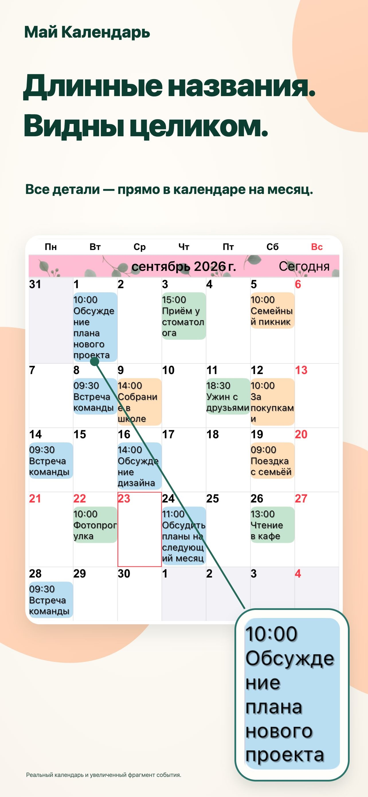
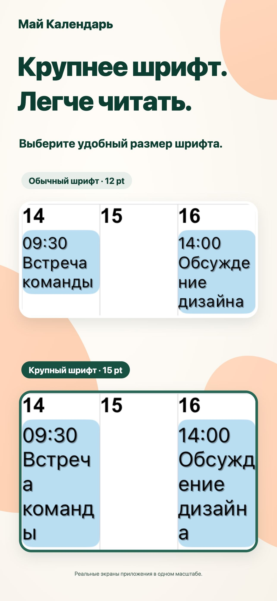
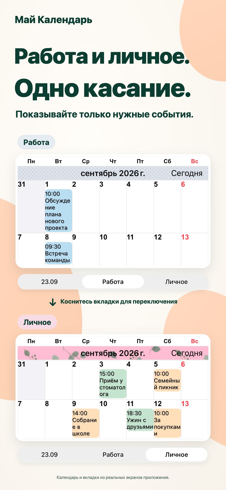
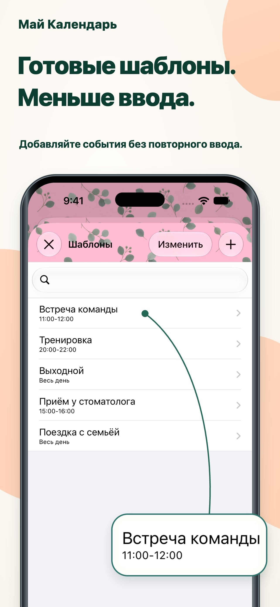

Оформление по вкусу.
Сочетайте цвета темы, фон событий и узоры в своём календаре.
Каждый день — нагляднее.
Длинные названия прямо в режиме месяца. Удобный текст и любимые цвета, чтобы все планы были как на ладони.
Для iPhone и iPadСмотреть в App StoreБесплатная загрузка · Встроенные покупки

Планировать день немного проще.
Работа и личная жизнь в одном месте.ДЛЯ ВАШИХ БУДНЕЙ
Настройте календарь под свой способ планирования.
Длинные названия переносятся на несколько строк. Настройте шрифт и размер текста, чтобы читать детали и видеть весь месяц.

Сохраняйте сочетания календарей и переключайтесь между рабочими и личными планами одним касанием.

Сохраните встречи, тренировки и приёмы как шаблоны. Дважды коснитесь даты и выберите шаблон, чтобы добавить событие.

МЕЛОЧИ, КОТОРЫЕ ВАЖНЫ.
Сочетайте цвета темы, фон событий и узоры в своём календаре.
Выбирайте из 20 типов виджетов, включая доступные только на iPad.
Отображайте только события, соответствующие введённому тексту.
ВОПРОСЫ И ОТВЕТЫ
Приложение можно скачать бесплатно. Есть встроенные покупки. Актуальные цены и варианты покупки смотрите в App Store. Смотреть в App Store
Да, на iPhone и iPad. Некоторые виджеты доступны только на iPad. Актуальные требования к системе смотрите в App Store.
Поддерживаются напоминания, праздники, номера недель и данные лунного календаря. Можно выбрать первый день недели и часовой пояс.
Уведомления отправляет приложение Apple «Календарь». Можно настроить напоминание перед началом или перед окончанием события.
ДНИ СТАНОВЯТСЯ ЯСНЕЕ.
Начните с календаря, который подходит вам.